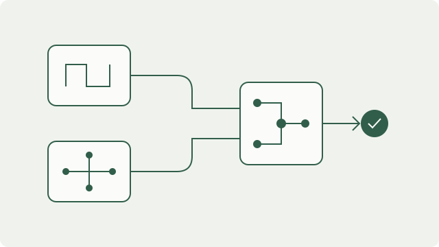

M&S 2.0: The next generation of modeling and simulation.
This project aims to advance AI methods and develop tools to make simulation models easier to build, retrieve, and reuse. It focuses on rapid simulation development, composability, and interoperability.